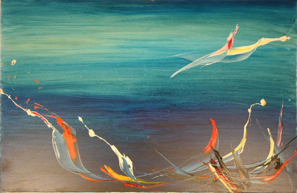

Details
Vernissage: Mittwoch, den 11. April 2018
Eröffnung: Otto Hans RESSLER (Ressler Kunst Auktionen)
Kurator: Amos SCHUELLER
Die Ausstellung war bis Ende Juni 2018 nach Terminvereinbarung zu besichtigen.
Zeichnungen und Bilder

Vernissage: Mittwoch, den 11. April 2018
Eröffnung: Otto Hans RESSLER (Ressler Kunst Auktionen)
Kurator: Amos SCHUELLER
Die Ausstellung war bis Ende Juni 2018 nach Terminvereinbarung zu besichtigen.